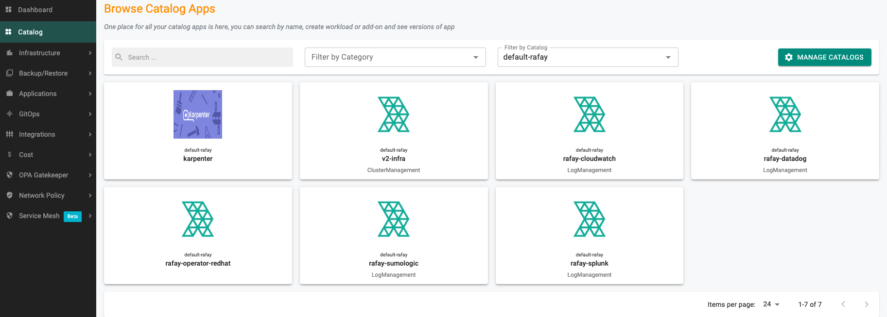
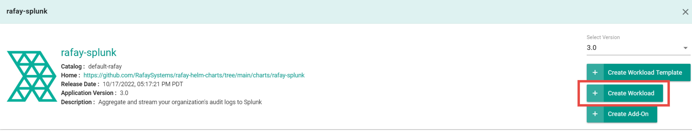
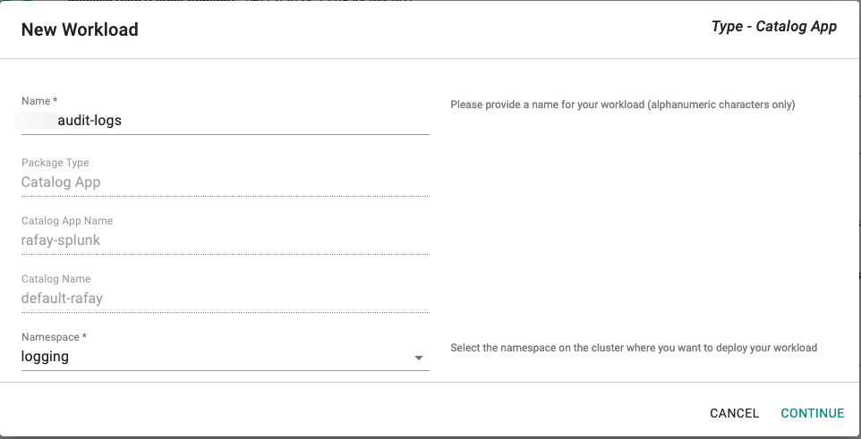
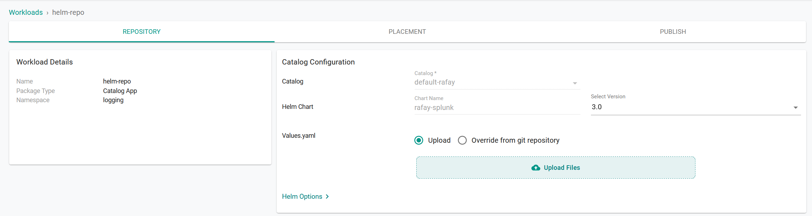

Aggregate Audit Logs to SIEM - Splunk and Splunk Cloud
To scrape and send audit log data to a Splunk server using the web console or the command line (RCTL).
Use the web console to configure your audit logs.
Prerequisites¶
- Customize the Values file (YAML). (See below for creating a values.yaml file).
- Create a namespace in your cluster.
Configure Workload¶
Note: Only one audit log workload is needed for an organization.
- In the web console, select Catalog.
- For Filter by Catalog, select default-rafay.

- Select rafay-splunk, then select Create Workload.

- Enter a name for the workload. Example: rafay-audit-logs.
- Select the namespace.

- Click Continue.
- On the Repository tab, for Values yaml:
- Create a values.yaml file. (See below for creating a values.yaml file)
- Click Upload Files.
- Select the values.yaml file.
- Click Open.

- Click Save and Go to Placement.
- Update the following for Placements:
- Select the appropriate Drift Action.
- Select Specified Clusters for the Placement Policy.
- Select the cluster from the cluster list.
- Click Save and go to Publish.
- Click Publish.
Use the Command Line Interface (RCTL) to automate reproducible workflows without having to use the web console.
Prerequisites¶
- Download RCTL
- Configure RCTL
- Customize the Values file (YAML). (See below for creating a values.yaml file).
- Create a namespace in your cluster.
Note: Set the correct project using RCTL.
Create a Repository¶
Create a repository.yaml file using the following example. Replace demo with the name of the project you are adding this repository to. Optionally, you can change helm-repo to another name; if you change the name, use that name for repository_ref in the workload.yaml file (see Create a Workload).
apiVersion: config.rafay.dev/v2
kind: Repository
metadata:
name: helm-repo
project: demo
spec:
repositoryType: HelmRepository
endpoint: https://rafaysystems.github.io/rafay-helm-charts/
credentialType: CredentialTypeNotSet
Run the create repository command and include the repository.yaml file.
Create a Workload¶
Create a workload.yaml file using the following example. Replace the names used in clusters, namespace, and project to match your environment where you want to publish the workload.
name: audit-logs
namespace: ns-name
type: Helm
project: demo
clusters: demo-cluster
repository_ref: helm-repo
repo_artifact_meta:
helm:
chartName: rafay-splunk
values: ./values.yaml
Run the create workload command and include the workload.yaml file.
Publish a Workload¶
Run the publish workload command. Replace workload-name with the name used in the workload.yaml file. Example: audit-logs.
Values YAML File¶
Create a values.yaml file that contains your Splunk information. Use the example below and change the following:
rafay_api_key- Your organization's API key. In the web console, select My Tools > Manage Keys.rafay_api_secret- Your organization's API Secret key. In the web console, select My Tools > Manage Keys.host- The root domain of your Splunk Server. You can find this in the URL field after you log in to your Splunk console. Example:splunkserver.mycompany.com.index- The name of the Splunk index. (See below for creating a Splunk index)ssl_verify(Optional) - Only change toFalseif you are using an insecure Splunk server.token- The Splunk HTTP Event Collector (Splunk HEC) token value. (See below for creating a Splunk HEC)secret_name- (Optional) Specify existing k8s secret name that contains your organization's API key, secret and splunk token. (See below is an example of k8s secret)
# Default values for rafay splunk audit log integration.
# This is a YAML-formatted file.
# Declare variables to be passed into your templates.
config:
## Rafay console URL
url: https://console.rafay.dev
## Rafay API Key
rafay_api_key: API_KEY
## Rafay API Secret
rafay_api_secret: API_SECRET
## Send Initial logs to splunk adog based on following value. Defaults to "14d" days
filter: 14d
## Time Interval to send logs to splunk
interval: 1m
## Splunk Server Host
host: splunkserver.mycompany.com
## Splunk Server Port
port: 8088
## Splunk HEC Token
splunk_token: SPLUNK_TOKEN
## Set to False for insecure splunk server
ssl_verify: True
## Index name to store audit logs to
index: k8s-cluster-audit
## Existning Secret Name or leave it empty
secret_name: ""
image:
repository: registry.rafay-edge.net/rafay-logs/rafay-splunk
pullPolicy: Always
# Overrides the image tag whose default is the chart appVersion.
tag: 0.3.9
serviceAccount:
# Specifies whether a service account should be created
create: true
# Annotations to add to the service account
annotations: {}
# The name of the service account to use.
# If not set and create is true, a name is generated using the fullname template
name:
rbac:
create: true
replicaCount: 1
imagePullSecrets: []
nameOverride: ""
fullnameOverride: ""
deploymentAnnotations: {}
podAnnotations: {}
resources: {}
# We usually recommend not to specify default resources and to leave this as a conscious
# choice for the user. This also increases chances charts run on environments with little
# resources, such as Minikube. If you do want to specify resources, uncomment the following
# lines, adjust them as necessary, and remove the curly braces after 'resources:'.
# limits:
# cpu: 100m
# memory: 128Mi
# requests:
# cpu: 100m
# memory: 128Mi
nodeSelector: {}
tolerations: []
affinity: {}
Creating a Splunk Index¶
- In the Splunk console, select Settings > Indexes.
- Click New Index.
- Enter a name for the index. Example: audit-logs-splunk.
- Make sure Events is selected.
- For Max raw data size, enter the maximum size of the index. Example: 2GB.
- For Searchable time (days), enter the number of days to include in the search results. Example: 30 days.
- Click Save.
- Copy the index name and paste it for the
indexin the values.yaml file.
Creating a Splunk HEC¶
Create a Splunk HTTP Event Collector (HEC).
- In the Splunk console, select Settings > Data Inputs.
- Click HTTP Event Collector.
- Click New Token.
- Enter a name for the collector (example: audit-Logs), then click Next.
- For Source type, click Select, type json, then select
_json. - Click Review.
- Click Submit.
- Copy the token value and paste it for the
tokenin the values.yaml file.